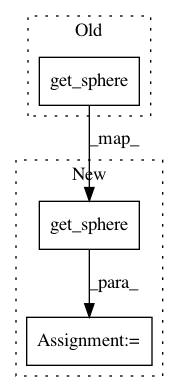

cf98e07258141202387f84d4578b4232700caa21,dipy/tracking/propagation.py,EuDX,__init__,#EuDX#Any#Any#Any#Any#Any#Any#Any#Any#Any#,38
Before Change
if odf_vertices==None:
eds=np.load(get_sphere("symmetric362"))
self.odf_vertices=eds["vertices"]
"""
After Change
tlist=[]
if odf_vertices==None:
vertices, faces = get_sphere("symmetric362")
self.odf_vertices = vertices
"""
print "Shapes"
print "a",self.a.shape, self.a.dtype
In pattern: SUPERPATTERN
Frequency: 3
Non-data size: 3
Instances
Project Name: nipy/dipy
Commit Name: cf98e07258141202387f84d4578b4232700caa21
Time: 2011-02-09
Author: matthew.brett@gmail.com
File Name: dipy/tracking/propagation.py
Class Name: EuDX
Method Name: __init__
Project Name: nipy/dipy
Commit Name: cf98e07258141202387f84d4578b4232700caa21
Time: 2011-02-09
Author: matthew.brett@gmail.com
File Name: dipy/reconst/dti.py
Class Name:
Method Name: quantize_evecs
Project Name: dPys/PyNets
Commit Name: f9f298f603a38c703d9b5f48e1809818053c5dfc
Time: 2020-04-29
Author: dpisner@utexas.edu
File Name: pynets/dmri/estimation.py
Class Name:
Method Name: sfm_mod_est